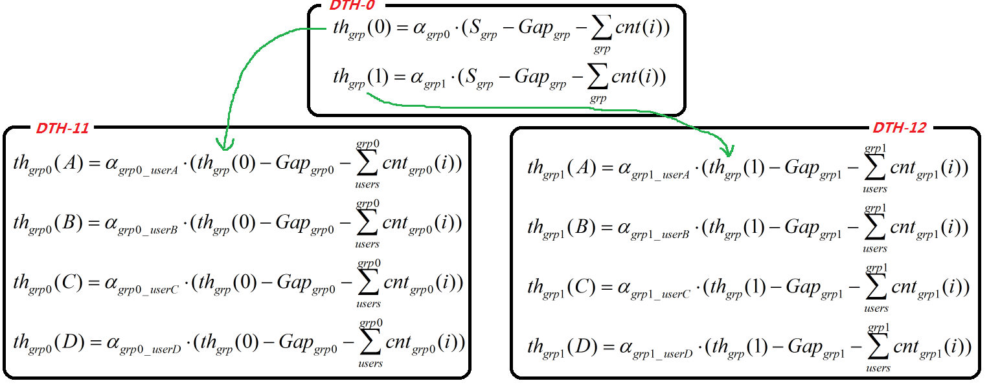

Space Management
The total space is split into three parts:
- Reversed Space: Each service flow just uses unique space designated to itself.
- Do not throw flow control when reversed space is not full.
- Shared Space: All service flows share all of the space. In specially, any service flow can uses the whole shared space.
- Dynamic threshold algorithm is applied to manage and decide the space among all services through flow control mechanism.
- The shared total space = M - GAP - sum(Ri)
- Headroom Space:
- Headroom space is used to absorb the overflow of flow control and resverse the space for special serveice. The gap value is decided by RTT of flow control and basic space quantity of special service need.
- Multi-threshold algorithm based as various priority services is suitable to generate a flow control to manage the headroom space
- When (scnt+rcnt)>=(M-GAP), it goes into headroom space.
A service uses reversed space in prior. After the reversed space is full, the service uses shared space.
To shared and reversed management aim, we should locates two statistic counters to each service:
- A reversed counter:
- Named with "_rcnt" postfix
- Counts the occupatuon in reversed space
- Increases count when reversed space is not full
- Decreases count when shared space is empty
- A shared counter:
- Named with "_scnt" postfix
- Counts the occupatuon in shared space
- Increases count when reversed space is full
- Decreases count when shared space is not empty
Hierarchy Space Management
In some scenarios, the total space should not distribute into the final users directly. There may be severial middle layers who is looked like a virtual user between final users and total space. This application is called hierarchy space management.
For example, the total resource is shared by two user group, and each group includes some users. The total resource is distributed into these two groups firstly, then tje final users share the corresponding group space. That means the user who is belong to group #1 only uses and shares the space of group #1.
In hierarchy application, the sub level total space comes from parent distribution, like dynamic threshold.

Hierachy DTH represents generally by: